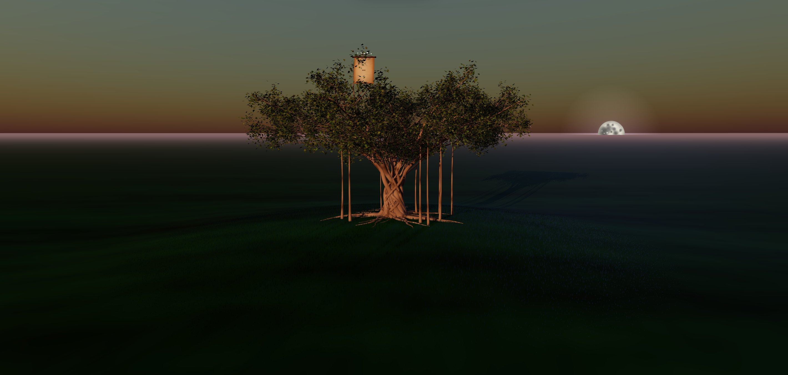

Deine Familie. Ein Baum, der mit euch wächst.
Privat · nur für eure Familie
Leg dich an, lade deine Familie ein – und seht gemeinsam zu, wie aus Namen eine Geschichte wird.
Angemeldet als Lea Linde

v0.35.0 · Nutzungsbedingungen · Datenschutz · GitHub
Beim Öffnen fliegt die Kamera immer zu deiner Karte. Ziehen dreht den Baum, Scrollen zoomt.
Die gestrichelten Plätze zeigen, wer noch fehlt. Ein Vorname reicht – Enter, fertig.
Person hinzufügen, Suchen, Familie einladen, Ansicht. Einstellungen, Sprache und Darstellung findest du oben rechts.
Privat · nur für eure Familie
Leg dich an, lade deine Familie ein – und seht gemeinsam zu, wie aus Namen eine Geschichte wird.
Angemeldet als Lea Linde